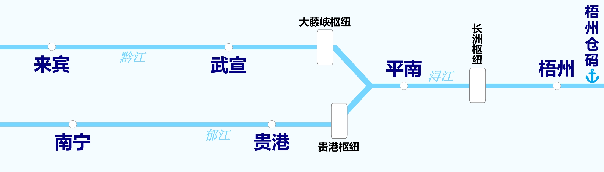

西江流域水位数据可视化报告
如果当日部分站点数据缺失，请尝试在上午10点后再次运行程序，并查看最新生成的可视化报告！
单击站点名称↓，可选择是否显示其水位波动曲线
上游整体情况：
水位上升▲ 整体变化0.18m
今早八点梧州水位：
2.56m
较昨日变化：
+0.33m▲
近2天梧州水位预报：
2.33m~2.79m 预计水位变化不大 上下小幅波动
🚨水库预警：
长洲枢纽出库流量更大，可能正在放水，对下游水位会有额外影响。
长洲枢纽水位已达到正常蓄水位，请关注放水信息！
🚨站点预警：
梧州水位过低，可能影响船舶通航！
2.56m
+0.33m▲
====
20.46m
-0.10m▼
==
60.10m
-0.02m▼
===========
60.19m
+0.22m▲
===
62.038m
+0.037m▲
====
43.362m
+0.042m▲
============
⚠️
正常
正常
🌊⚠️
0m
入库流量: 0m³
出库流量: 0m³
0m
入库流量: 0m³
出库流量: 0m³
20.6m
入库流量: 1100m³
出库流量: 1500m³

站点数据是否获取 已获取到数据 未获取到数据
✅梧州✅濛江✅横县✅峦城✅武宣✅来宾✅长洲枢纽✅大藤峡枢纽✅贵港枢纽
报告生成时间: 2026-11-23 14:48:53
数据记录数: 74 条